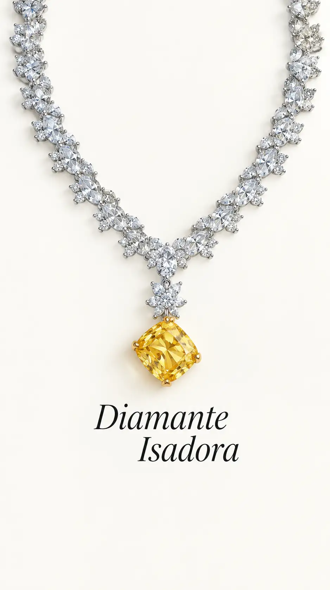

Uno de los elementos visuales más reconocibles de la película es el vestido amarillo que utiliza Andie durante el evento final
Fue creado por la diseñadora de vestuario Karen Patch junto con Carolina Herrera, y fue pensado especialmente para destacar el collar de diamantes que utiliza el personaje.
El collar Isadora

El collar que aparece junto al vestido contiene un enorme diamante amarillo de aproximadamente 80 quilates, diseñado por Harry Winston
Dentro de la película recibe el nombre de "Isadora Diamond"y su valor se estimó en aproximadamente 6 millones de dólares.
Nominaciones
Nominaciones destacadas:
MTV Movie Awards — Mejor actuación femenina, Kate Hudson.
Teen Choice Awards — Actriz de comedia, Kate Hudson.
Teen Choice Awards — Mejor "Hissy Fit", Kate Hudson.
Teen Choice Awards — Choice Movie Liar, Kate Hudson.
Teen Choice Awards — Choice Movie Liar, Matthew McConaughey.
Teen Choice Awards — Choice Movie Liplock, Kate Hudson y Matthew McConaughey.
Su legado
Más de veinte años después de su estreno, la película continúa siendo reconocida como una de las comedias románticas más populares de los 2000. Su vestuario, sus escenas icónicas y la pareja Hudson-McConaughey ayudaron a convertirla en una película de culto dentro del género.